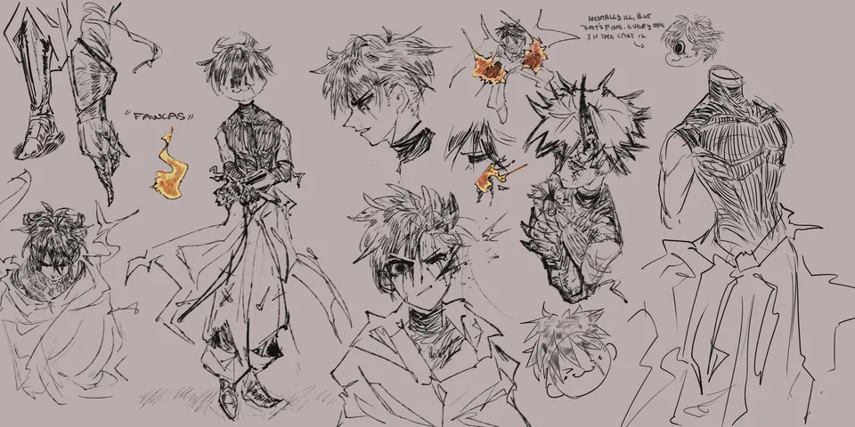
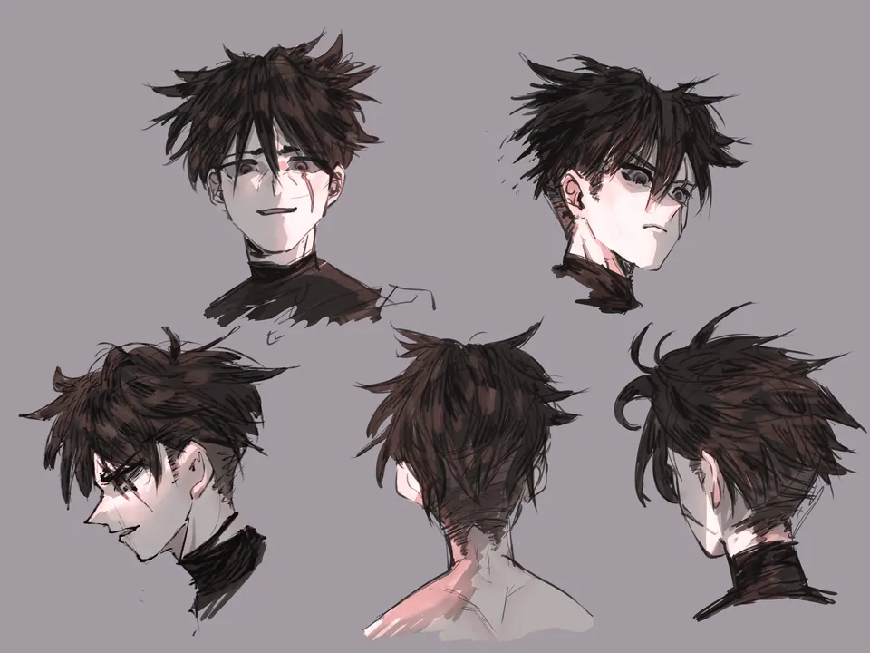
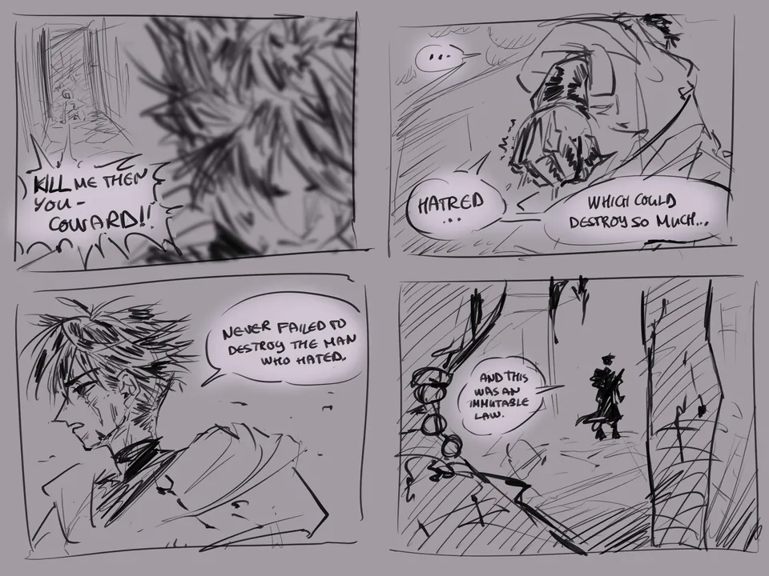

01SketchLoose drawings and the few things I knew I wanted: the gauntlets and the fire.Nothing needs to be clean yet. The point is to get ideas moving; everything can be refined later.
02DesignThe character takes shape. Some ideas stay, others get cut, and the palette is set.Head studies from several angles lock in his hair, features and expression.
03StoryI put him into short comic scenes to find out who he is.Strong or fragile, stubborn or persuasive, blunt or scheming: a few panels show it fast.